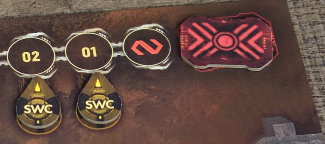
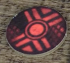

Pomieszczenia¶
Tutaj jest lista pomieszczeń wraz z akcjami.
Ogólne wymagania:¶
- Wymagania:
 zgodnie z numerem na karcie
zgodnie z numerem na karcie- Pomieszczenie nie może być zepsute
- Mogę nawet wtedy, gdy jest pożar
- Musi być symbol zasilania
- Nalepa rule: To bym stosował tylko w przypadku pomieszczeń z komputerem
- W pomieszczeniu nie może być Nocnego Łowcy
- Konsekwencje:
- Wykonuje kartę danego pomieszczenia
Zasilanie Awaryjne¶
- Wymagania:
- nie mogę, jeśli są 3 żetony zasilania zwrócone ku górze, czyli na niebiesko
- Konsekwencje:
- Ustaw zasilanie
- rozmieść żetony zasilania tak jak chcesz
- Ustaw żeton czasu aktywną stroną ku górze, czyli na niebieski kolor
- jeśli był nieaktywny, czyli czerwony
- Ustaw zasilanie
Centrum Szybkiego Reagowania¶
- Tutaj mogę:
- Sprawdzić żeton planu awaryjnego z puli neutralnej
- Drogą dedukcji może mi to pomóc ocenić, jaki jest obowiązujący plan awaryjny 
-
Aktywować procedurę alarmową
- Podziel numer pola, na którym się znajduje żeton czasu przez 2 i zaokrąglij w dół
- Przykładowo: 11 / 2 = 5.5 => 5
- Umieść tam żeton planu awaryjnego

- Natychmiast otwiera się Izolatka i postacie mogą się w niej zamykać
- Sprawdzić żeton planu awaryjnego z puli neutralnej
Komora dekontaminacyjna¶
- Tutaj mogę:
- Usunąć znacznik śluzu
- Przeskanować wszystkie karty zarażenie, które mam na ręce i je usunąć
- Jeśli mam larwę, to też ją usuwam
Gabinet Chirurgiczny¶
- Skanuje wszystkie karty skażenia z dowolnego miejsca, jakie mam
- usuwam te, które są zarażone
- jak mam larwę na planszy, to usuwam ją
- dostaję 1 powierzchowną ranę
- automatycznie pasuje
- formuje nowy stos kart akcji ze wszystkich kart
Ambulatorium¶
- Tutaj mogę:
- Wyleczyć całkowicie 1 wybraną głęboką ranę
- Opatrzyć wszystkie głębokie rany
- czyli je odwrócić
- Wyleczyć całkowicie wszystkie powierzchowne rany
Centrum kontroli wysyłki CARGO¶
- Tutaj mogę podejrzeć wybrany żeton SWC
- I go przesunąć o jedno pole w prawo lub lewo
- o ile nie ma tam znacznika czasu
- ani innego żetonu SWC
- I go przesunąć o jedno pole w prawo lub lewo
System wysyłki CARGO A¶
- Wymagania:
- tylko wtedy, gdy żeton czasu znajduje się na polu, na którym leży dowolny żeton SWC
- kapsuła A jest pusta
- Konsekwencje:
- odrzucam wszystkie karty z ręki i robię PAS
- umieszczam figurkę w danym polu kapsuły
- nie wpływają na mnie żadne efekty z gry
- takie jak na przykład, zniszczenie bazy, wtedy nie umieram
- chyba że zaznaczono na jakiejś karcie inaczej
System wysyłki CARGO B¶
- Analogicznie jak wyżej
System wysyłki CARGO C¶
- Analogicznie jak wyżej
System Chłodzenia¶
- Rozpoczynam procedurę odliczania do autodestrukcji:
- Biorę żeton autodestrukcji i umieszczam go na torze czasu o 3 pola na prawo
- 2 pola toru czasu będą wtedy puste
- umieszczam go żółtą stroną ku górze
- dopóki żółta strona jest widoczna, można przerwać odliczanie
- Biorę żeton autodestrukcji i umieszczam go na torze czasu o 3 pola na prawo
Generator¶
- Tutaj mogę:
- Włączyć zasilanie w danym sektorze
- Wyłączyć zasilanie w danym sektorze
- Zatrzymać procedurę autodestrukcji, gdy żeton jest zwrócony żółtą stroną ku górze
Laboratorium¶
- Badam jedno z wybranych, o ile oczywiście mam na ręce
- zwłoki postaci
- truchło
- jajo
- Następnie podnoszę wtedy poziom wiedzy postaci o 3
- Następnie kładę przebadany obiekt na pustym polu planszy laboratorium od lewej
- jeśli dany obiekt nie został przebadany jeszcze, to
- odkrywam słabość Nocnego Łowcy
- jak został, to po prostu odrzucam obiekt do puli ogólnej
- jeśli dany obiekt nie został przebadany jeszcze, to
Gniazdo¶
- Gracz, który je odkrył, natychmiast podnosi poziom wiedzy o 1
- Tutaj mogę:
- wziąć 1 żeton jaja z laboratorium nocnych łowców
- ale wtedy muszę wykonać rzut na szmery
- niszczyć jaja:
- jeśli wszystkie są zniszczone, to gniazdo uznaje się za zniszczone
- umieszczam wtedy znacznik amunicji
- jeśli wszystkie są zniszczone, to gniazdo uznaje się za zniszczone
- jeśli w fazie wydarzeń, dokładniej skutki pożarów, są tutaj jakieś jaja, to niszczę 1 z nich
- Nalepa rule: Ja bym wtedy niszczył wszystkie jaja
- wziąć 1 żeton jaja z laboratorium nocnych łowców
Archiwum¶
- Wymagania:
- tylko wtedy, gdy mój żeton wiedzy jest nieaktywny
- Tutaj mogę:
- podnieś poziom wiedzy o dwa
- obracam wtedy żeton wiedzy na aktywną stronę
- moh® podejrzeć treść dowolnego żetonu planu awaryjnego
- nie licząc tego na końcu toru czasu
- podnieś poziom wiedzy o dwa
Wejście do jaskini¶
- Przenieś się do dowolnego odkrytego pomieszczenia z wejściem do korytarzy technicznych
- Rozpatrz 1 kartę ataku Nocnego Łowcy
- atak przeprowadza 1 dorosły osobnik
- aktywny jest efekt ciemności
- Rozpatrz 1 kartę ataku Nocnego Łowcy
Ciągi ewakuacyjne¶
- Tutaj zawsze jestem w ciemności
Magazyn¶
- Robię przedmiot
- nie muszę mieć wtedy 2 kart przedmiotów potrzebnych do zrobienia samoróbki, jedna wystarczy
Izolatka¶
- Tutaj mogę:
- Dobrać do 6 kart akcji, jak moja postać tutaj zaczyna rundę
- To nie działa, jeśli jest znacznik awarii
- Zamknąć się w środku
- gdy procedura alarmowa jest aktywna
- gdy żeton czasu jest na biały polu, czyli od 8
- Wtedy wykonuje rzut na szmery
- jak się pojawi dowolny nocny łowca, to nie udaje mi się zamknąć
- jak nie, to zamykam się w Izolatce
- jestem już tylko obserwatorem
- czekam na koniec gry
- Dobrać do 6 kart akcji, jak moja postać tutaj zaczyna rundę
Szyb Windy S-01¶
- Musi mieć aktywne zasilanie
- Gracz nie mogę być zaangażowany w walkę
- Wtedy można:
- wezwać windę, gdy jest w innym miejscu
- skorzystać z windy, gdy jest obok gracza
- gracz może zabrać innego gracza, jeśli tamten chce
- nie wykonuje rzutu na szmery:
Szyb Windy S-03¶
- Jak wyżej
Szyb Windy S-03¶
- Jak wyżej
Pokój łączności¶
- Tutaj mogę:
- wysłać sygnał
- umieszczam znacznik statusu na swojej planszy
- sprawdzić cel innego gracza
- o ile wysłał już sygnał
- musi mi go w sekrecie pokazać
- o ile wysłał już sygnał
- wysłać sygnał
Kwatera straży¶
- Zmniejszam wartość przedmiotów o 1 i biorę jedną z tych kart ze stosu samoróbek, o ile są:
- Paralizator
- Skafander Kosmiczny
- Nalepa rule: Biorę kartę, jak nie ma już, to sobie na jakiejś kartce ją dorysuję

Skażone pomieszczenie¶
- Za każdym razem, gdy je przeszukuje, umieszczam znacznik śluzu na planszy swojego
Kontrola Systemu Wentylacji¶
- Wybieram pomieszczenie gdzie:
- jest wejście do korytarzy technicznych
- żadne drzwi obok nie są zniszczone
- Konsekwencje:
- Zamykam wszystkie drzwi
- Usuwam znacznik pożaru, jeśli jakiś był
- Umieszczam znacznik wentylacji
- Jeśli przed zakończeniem fazy graczy drzwi zostaną zniszczone, to usuwam znacznik wentylacji
- Jeśli zaczynam fazę wydarzeń, a znacznik wciąż tam jest, to każda postać i nocny łowca tam umiera
- i usuwam wtedy znacznik wentylacji
Kontrola Systemów Obronnych¶
- Wymagania:
- zmniejsz ilość przedmiotów o 1
- albo umieść znacznik awarii
- Konsekwencje:
- Wybierz pomieszczenie bez znacznika awarii
- Umieść tam awarię
- Każdy nocny łowca co tam jest, otrzymuje po 1 obrażeniu
- Każda postać co tam jest, otrzymuje 1 głęboką ranę
- Nalepa rule: Ja bym umieścił znacznik pożaru
Pokój testów¶
- Wymagania:
- Poziom postaci wynosi co najmniej 4
- Konsekwencje:
- Biorę neutralizator ze stosu samoróbek, o ile jest
- Nalepa rule: Biorę kartę, jak nie ma już, to sobie na jakiejś kartce ją dorysuję
- Nalepa rule: Biorę kartę, jak nie ma już, to sobie na jakiejś kartce ją dorysuję
- Biorę neutralizator ze stosu samoróbek, o ile jest
001 - Ucieczka do Bunkra¶
- Wymagania:
- postać znajduję się na kafelku obok bramy głównej
- w pomieszczeniu nie ma postaci nocnego łowcy
- brama jest otwarta
- łazik jest dostępny
- lub postać ma skafander kosmiczny
- w razie czego da się jakoś sprowadzić zdalnie łazik do bazy
- Konsekwencje:
- wtedy wykonuje rzut na szmery
- jak się pojawi dowolny nocny łowca, to nie udaje mi się zamknąć
- jak nie, to zamykam się w Izolatce
- jestem już tylko obserwatorem
- czekam na koniec gry
- wtedy wykonuje rzut na szmery
Bunkier¶
- Może być tam więcej niż 1 postać
- Nie jest niszczony przez awarię ani pożary
- Nie jest niszczony, gdy baza jest niszczona